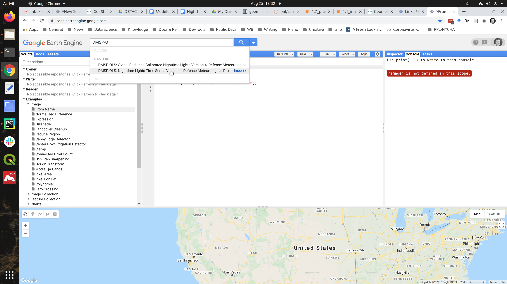
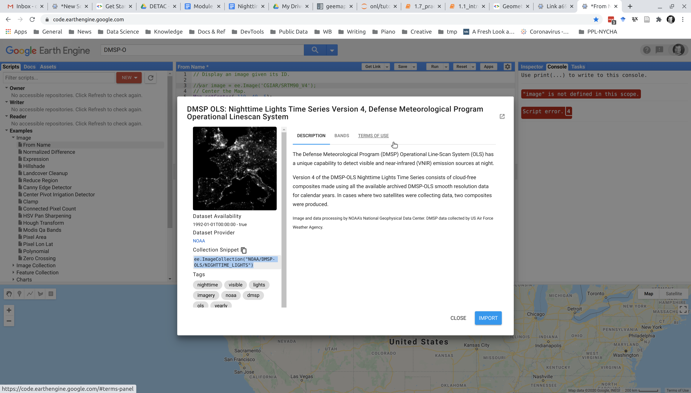

Module 1: Introduction¶
7. Practical exercise: image visualization (10 min)¶
When you’re working with maps and images, what is the first thing you want to do? Display it! In this exercise, we’re going to display nighttime lights for Nigeria in 1992 and 2013.
Our tasks:
Use the Python geemap module to create an interactive map object in our Jupyter Notebook
Query DMSP-OLS data for 1992 in GEE and add it to our map object
Display Nigeria nighttime lights for 1992
Visual inspection
Repeat steps 2 and 3 for Nigeria in 2013
7. 1 Using geemap, we’ll set up an interactive map object¶
Let’s first make sure geemap and it’s dependencies are working properly.
Later in this tutorial, we’re going to show you how to import other geospatial data files, such as the boundaries to countries or sub-national regions, to help you analyze nighttime lights.
For now, we’re going to focus our scene on Nigeria, but we’ll do that simply by centering our map on the capital city of Abuja, which we can find at approximately, latitude: 9.0 and longitude: 7.4 and we’ll set our map zoom factor to 6 to include the entire country in our view. You should get in the habit of saving parameters as variables. This makes it easy to re-use your code for different values.
# import geemap for our Python session
import geemap
# set our initial map parameters for Abuja, Nigeria
center_lat = 9.0
center_lon = 7.4
zoomlevel=6
# initialize our map
myFirstMap = geemap.Map(center=[center_lat,center_lon], zoom=zoomlevel)
Because this is an interactive object, when we add layers (as we will below), you dont have to display a new map. The object we created, myFirstMap will be updated in memory. All we need to do then is refresh (re-execute) this cell to display our map whenever we want.
# display our map
myFirstMap
If you don't see a map: don't panic! But you've run into one of the challenges of interpreted open-source languages -- your Python packages and dependencies, including Jupyter notebook, and your computer's "back-end" software may not be in sync.
First, make sure geemap and jupyter are installed properly as per our earlier module [link]. If you’re using a virtual environment, make sure that’s activated and your packages are installed within it!
If that doesnt resolve the issue, another fix is to make sure your Jupyter extensions enable ipyleaflet by running this code in command line (you can proxy this action, by adding a shebang in your notebook code, like this:
!jupyter nbextension enable --py --sys-prefix ipyleaflet
Enabling notebook extension jupyter-leaflet/extension...
- Validating: OK
You may have to close out and restart your notebook after this, but you should only have to do this once.
Hopefully, you’ve got geemap set up and working. If not, you’ll want to troubleshoot possible issues – here’s the advantage of Python as an open-source language: there are many forums for discussing common problems. If you learn to properly frame your problem and search for it on Google (including details like the language and version of packages and any error message you receive) you can often find others who have dealt with your issue. If you havent, you can try posting the issue yourself on a focum like StackOverflow.com
If you learn to do this, it will serve you well. Troubles can be frustrating, but “shooting” them requires problem-solving that helps you better understand what you’re doing and become a better programmer and data scientist.
7. 2 Query DMSP-OLS data for 1992 in GEE and add it to our map object¶
Get DMSP-OLS image ID for 1992¶
Now we want to query our nighttime lights. We’re looking at the DMSP-OLS series. Images are what Google Earth Engine uses to describe raster files and ImageCollections are collections (like a time series) of images. We’re looking for the DMSP-OLS Nighttime lights ImageCollection.
The ImageCollection id for that is: “NOAA/DMSP-OLS/NIGHTTIME_LIGHTS”
…but in case you forgot, it’s easy to search for particular collections. For example, if you’re using the GEE code editor, search for “DMSP” and it will prompt you for 2 collections – we want the nighttime lights.

Select the collection for “Nighttime lights” and in the window that appears, you’ll see the exact collect ID (highlighed in the lower left). NOAA/DMSP-OLS/NIGHTTIME_LIGHTS

Since we’re doing this via the Python API in our own notebook, all we need is the ImageCollection id to call this. That full collection is a lot of data; however. And all we really need is the image for 1992 (recall that the DMSP-OLS nighttime lights are only available annually).
Recall that the DMSP is composed of six satellites spanning 1992 to 2013. The satellite designated “F10” is what provided images for 1992 (refer to that grid if you forget!).
So the full Image id for our desired image is the ImageCollection ID: NOAA/DMSP-OLS/NIGHTTIME_LIGHTS
…plus the image ID for 1992: /F101992
Again, let’s get in the habit of setting variables so we avoid repetition (including repeated typos!)
dmsp92id = "NOAA/DMSP-OLS/NIGHTTIME_LIGHTS/F101992"
7.3 Create an Earth Engine object for the DMSP 1992 image and add to our map object¶
# import the module ee, which was automatially installed when we installed geemap
import ee
# now we can create an ee object for our 1992 image
# note that for DMSP, there is only one band, so we dont need to worry about selecting a band.
dmsp92 = ee.Image(dmsp92id)
# let's add this image as a layer to our map object and call it "DMSP NTL 1992"
myFirstMap.addLayer(dmsp92, name='DMSP NTL 1992')
# re-display our map
myFirstMap
Voila! We have a nighttime layer from the 1992 DMSP-OLS composite.
Pro tip: We didn’t need to re-type myFirstMap to display it again. Because we created an interactive object, we could just scroll back up to the cell with myFirstMap displayed above the first time and re-execute that cell to show our map with this new layer. This is handy if you want to save space and avoid duplicating displays.
You may notice it’s quite dark; however. You can always toggle the layer off, but if you want to visualize the nighttime lights over the basemap, you’ll want to change the opacity of your nighttime lights layer. Fortunately, this is very easy for us to do.
Our .addLayer function allows for other visual parameters, like opacity. Let’s give this layer an opacity of 75%:
myFirstMap.addLayer(dmsp92, name='DMSP NTL 1992', opacity=0.75)
Notice that by using the same name as before, we over-wrote the previous layer.
If you wanted to create a new layer, this time with 50% opacity, but keep the previous layer, just change the name. Now you have both layers and you can toggle them on/off if you’d wish.
myFirstMap.addLayer(dmsp92, name='DMSP NTL 1992 opc. 50%', opacity=0.5)
7.4 Visual inspection¶
Take a look around. Interact with the map you just created with just the basemap (Open Street Maps by default) and the first (75% opacity) layer (toggle the other DMSP layer off or it will darken your view).
Navigate to Abuja and zoom in.
Can you see where the overlap of the nighttime lights are with the roads?
How well do they overlap?
Are there any surprises?
What about other parts of Nigeria?
7.5 Add a layer for DMSP-OLS 2013¶
Now let’s look at nighttime lights for 2013. To do this, we can just add a new layer to our object.
Can you do this on your own?
# your code here
Need some hints?
# find the Image ID and set it as a new variable (hint: the satellite's name is "F18")
# create the ee object
# add this image object as a new layer in your map
# name it "DMSP NTL 2013" and give it an opacity of 75%.
You should have been able to add a new layer and when refreshing the cell for myFirstMap above, see your new layer. If not, scroll down to see the code…
# find the Image ID and set it as a new variable (hint: the satellite's name is "F18")
dmsp2013id = "NOAA/DMSP-OLS/NIGHTTIME_LIGHTS/F182013"
# create the ee object
dmsp2013 = ee.Image(dmsp2013id)
# add this image as a new layer in your map object, myFirstMap
# name it "DMSP NTL 2013" and give it an opacity of 75%.
myFirstMap.addLayer(dmsp2013, name='DMSP NTL 2013', opacity=0.75)
Now that you have both years, you can toggle back and forth and compare the differences.
Do you see any major changes?
Zoom in for a closer look at Abuja: do you see the growth from 1992 to 2013?
7.6 Create a split planel view¶
We’ve added our 2013 layer to compare with 1992, but it’s kind of annoying to toggle each layer. It’s also hard to truly compare. If we create a split panel view with a slider, we can more easily see the difference.
There is a built-in method in geemap for this, which makes it simple to do.
We’ve already created our 1992 and 2013 DMSP image objects and saved those as variables, so no need to re-create. We just need to generate a tile layer with each:
# generate tile layers from the ee image objects nd name them
dmsp92_tile = geemap.ee_tile_layer(dmsp92, {}, 'DMSP NTL 1992')
dmsp2013_tile = geemap.ee_tile_layer(dmsp2013, {}, 'DMSP NTL 2013')
If you want to create a new map object you can, just as before and center it using the parameters for Nigeria we set before:
newMap = geemap.Map(center=[center_lat,center_lon], zoom=zoomlevel)
But you can also just alter the initial object we created, which is what we’ll do. We can call the object’s .split_map() method and set the left and panels with our 1992 and 2013 tile layers.
myFirstMap.split_map(left_layer=dmsp92_tile, right_layer=dmsp2013_tile)
Now when you refresh your map object above, you’ll see a slider and the 1992 nighttime lights layer on the left with 2013 on the right.
Slide it over Abuja: can you see the difference in the distribution of lights in 2013 compared to 1992?
Look at some other regions around Nigeria.
On your own: try comparing other years of DMSP-OLS data by creating new layers. Keep exploring Nigeria or try navigating (and centering your initial map object) on other parts of the world.
This interactive viewer is a simple way to view changes in an area, but the real power is in conducting analysis. You can image that quantifying the difference in nighttime lights from 1992 to 2013 or calculating the slope of change across a time series could reveal areas of high or low growth and other patterns.
We’ll learn how to do this as well as deal with important issues of calibration. These satellite detectors, like all sensors, can change over time or have inherent biases (known as “instrument bias”), so it’s important understand how to address these in order to do a fair comparison.
BONUS: Code re-factoring (optional)¶
Our primary objective was to get a feel for using geemap, GEE, and Jupyter notebooks. Hopefully, you’ve now done that.
As noted in the Intro to Jupyter notebooks, notebooks are powerful but can facilitate bad habits. One of those is disorganized and repetitive code (strive for DRY: Dont Repeat Yourself!).
As a bonus section, let’s refactor the code we’ve written above into cleaner, more modular code. It will also help you see how helpful it can be to use variables and make it less painful to scroll up and down a notebook when you’re updating and displaying your map object.
Our first step is to import our modules up top so it’s easy to see what we’re using. (Normally we dont need to import these again, since we already did in this notebook…this is just for illustration).
Then we’ll define a few functions that initialize our map and Earth Engine image objects and allow us to add layers dynamically using different arguments.
Then we’ll call these methods to update and display our map object.
This refactor introducts a few helpful concepts. If you want to learn more check them out:
import geemap
import ee
def init_geemap(**mapkwargs):
return geemap.Map(**mapkwargs)
# we can set defaults for arguments -- useful if they dont change much
def create_dmsp_image(imageID, DMSP_collectionID="NOAA/DMSP-OLS/NIGHTTIME_LIGHTS"):
return ee.Image(DMSP_collectionID + f"/{imageID}")
def create_tile_layer(ee_object, name):
return geemap.ee_tile_layer(ee_object, {}, name)
def add_image_layer(map_object, ee_object, name, **kwargs):
map_object.addLayer(ee_object, name=name, **kwargs)
return map_object
def create_split_panel(map_object, left_tile_layer, right_tile_layer):
map_object.split_map(left_layer=left_tile_layer, right_layer=right_tile_layer)
return map_object
# initial variables
abuja_lat = 9.0
abuja_lon = 7.4
zoomlevel=6
# Looking up these DMSP names is a bit tedious.
# We have these satellite names mapped to the right year (as shown earlier)
# so later we might create a dictionary that stores these so all we need to do to get
# the ImageID is provide the year
dmsp92_ID = "F101992"
dmsp2013_ID = "F182013"
anotherMap = init_geemap(center=[abuja_lat, abuja_lon], zoom=zoomlevel)
# re-run this cell to get updated display
anotherMap
dmsp92 = create_dmsp_image(imageID=dmsp92_ID)
dmsp2013 = create_dmsp_image(imageID=dmsp2013_ID)
# add 1992 layer (with opacity at 75%)
anotherMap = add_image_layer(map_object=anotherMap, ee_object=dmsp92, name='DMSP NTL 1992', opacity=0.75)
# add 2013 layer
anotherMap = add_image_layer(map_object=anotherMap, ee_object=dmsp2013, name='DMSP NTL 2013', opacity=0.75)
# create tile layers
left_layer = create_tile_layer(dmsp92, 'DMSP 1992')
right_layer = create_tile_layer(dmsp2013, 'DMSP 2013')
# modify the map object to be split panel view
anotherMap.split_map(left_layer=left_layer, right_layer=right_layer)